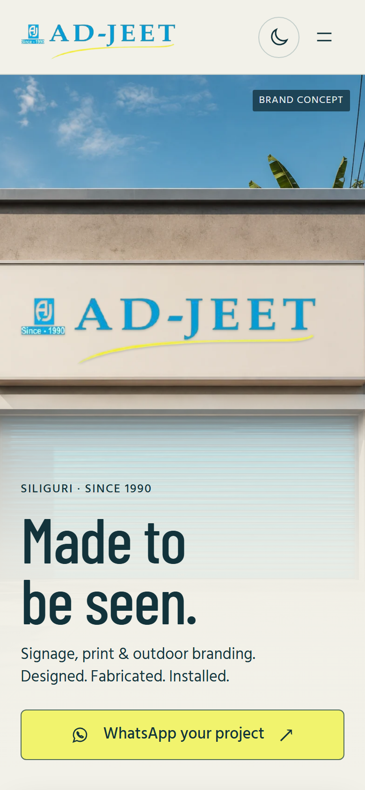
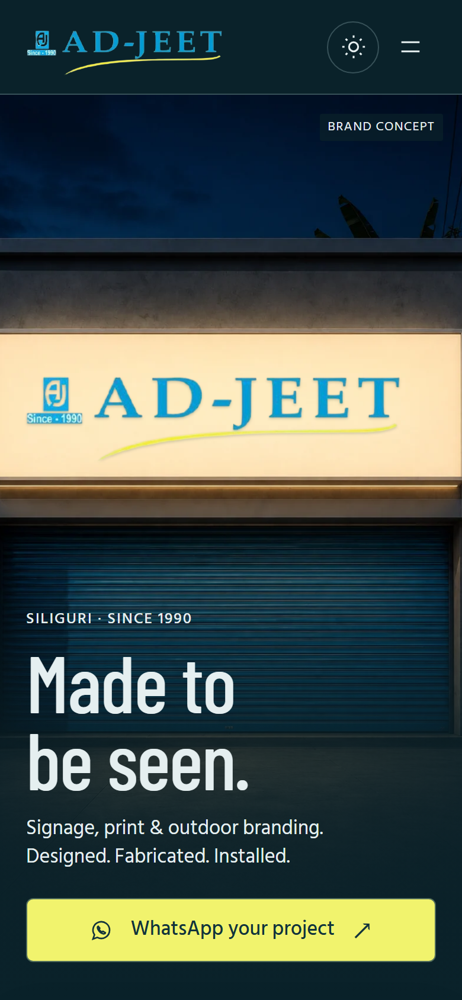
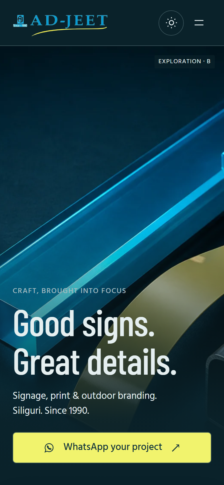
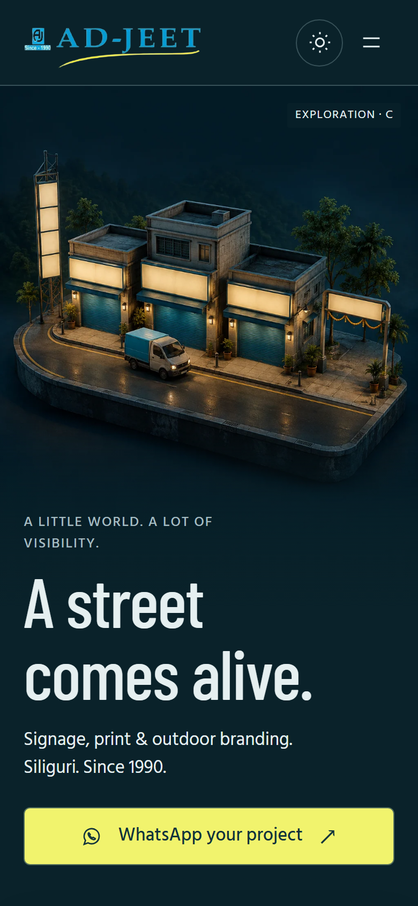
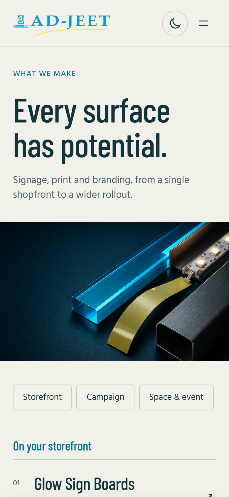
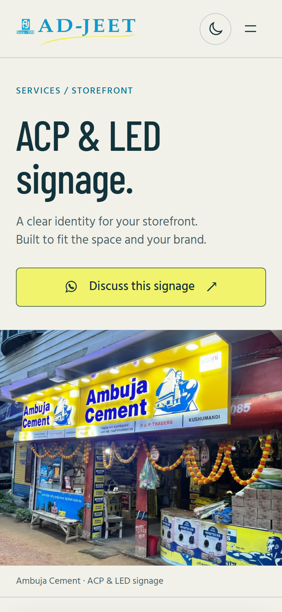
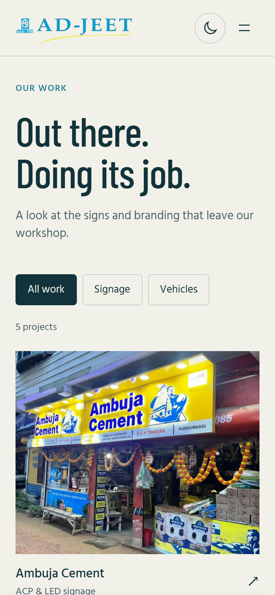
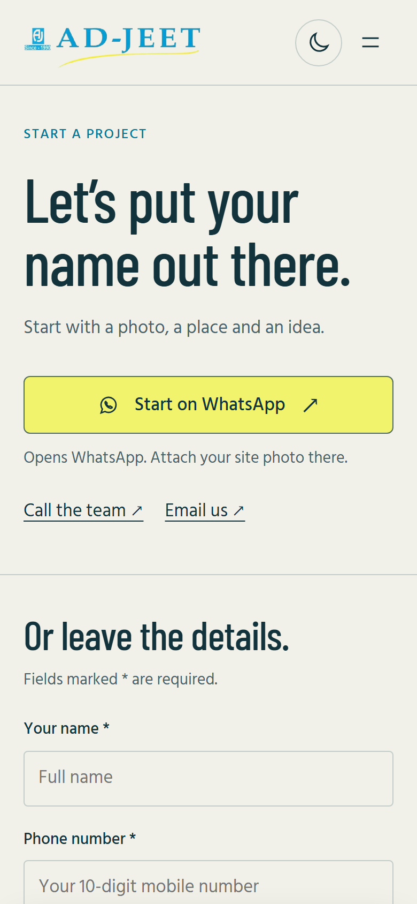
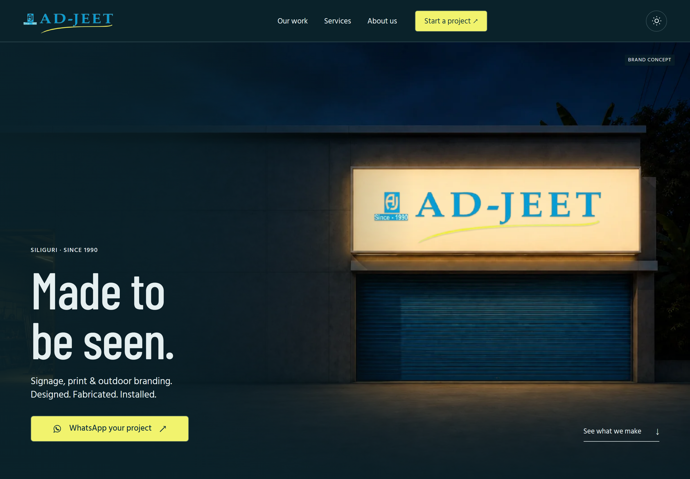

A. The streetfront
The clearest expression of the business. Day and night make the service tangible.
Recommended ↗
Creative direction
7 September 2026
Made to be seen
Your original identity. A hero that changes from daylight to illuminated night. Real work, shown generously. A clear way to start a project from your phone.
01 / Daylight

02 / Lights on

Recommended direction / A
The theme switch changes the hero background itself. The sign lights up. The interface follows. The composition stays still.
Your original logo remains a separate, unchanged image layer.
Explore the reference ↗Visual proposal, ready for review.
Production implementation is a separate step.
A explores place. B explores craft. C explores reach. My recommendation combines A’s hero with B’s material study deeper in the page. C is an alternative direction.
The clearest expression of the business. Day and night make the service tangible.
Recommended ↗Macro detail, acrylic, metal and light. Strong for explaining the craft, more abstract as a first impression.

View study ↗An ambitious 3D world showing different surfaces. More playful, with smaller details on a phone.

View study ↗Mobile layouts for the full journey. Open a board to scroll it. Controls demonstrate design intent; the reference sends no enquiries.

A catalogue organised around the customer’s space.

The work, the materials and a useful starting brief.

Large project photographs and simple filters.

WhatsApp first, with the existing form underneath.
Sign cyan
#109FCC
Sweep yellow
#F1F36D
Workshop chalk
#F2F1E9
After-hours petrol
#0A222A
Reading ink
#12333B
Barlow Condensed gives the supporting type a sign-like rhythm. Hind Siliguri keeps body copy approachable and supports Bengali alongside Latin.
The illuminated hero. The first full-width project photograph. The material close-up. The cyan enquiry panel. Each has a different job.
The same workshop expands to leave room for the headline. Mobile has its own portrait plate and crop.

{kind=link}